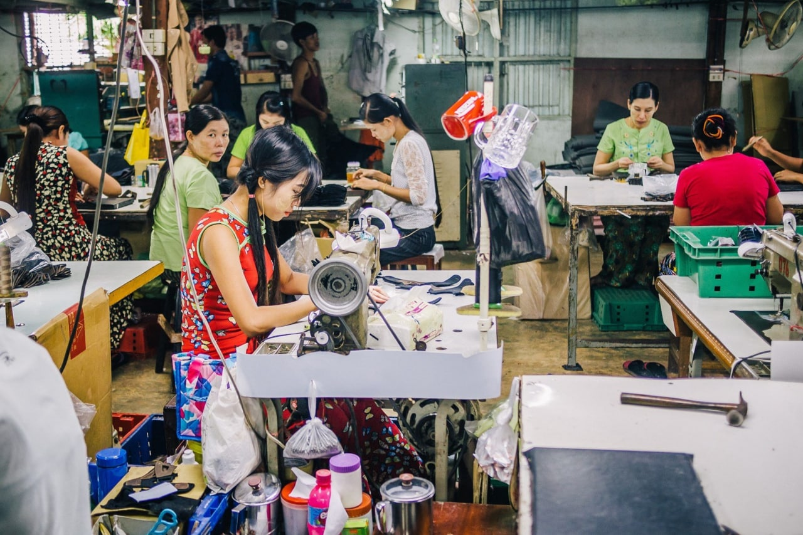

Fast Fashion: An epidemic
Every minute you reload Shein, about 10 new items appear on your screen. That is because on average, Shein uploads over 5000 new items every day. Five thousand! That is 5000 types of garments being manufactured daily in sweatshops that pay low wages to workers. Nothing about Fast fashion brands are ethical nor sustainable at all, but it has managed to stick to us with its cheap prices and quick production of trendy clothing.

Viewing fast fashion through environmentally-friendly lenses, it adds to the fashion industry’s horrible reputation in being non-environmentally friendly, for fashion already is the world’s second most polluting industry as it is. Here are the big facts, and big numbers:
“The fashion industry is currently responsible for more annual carbon emissions than all international flights and maritime shipping combined.”
85% of most spare textiles get dumped.
“The world consumes around 80 billion new pieces of clothing every year, 400% more than the consumption twenty years ago.”
The numbers are astronomically high, and they aren’t slowing down the speed either. Over the pandemic, fast fashion has become more of a trend due to online shopping sites becoming very convenient to use. Online fashion giants are rising, targeting Gen Zs now with marketing campaigns, one after another and sales are skyrocketing. And the environment is facing the heat for it.
Viewing fast fashion brands through an ethical eye, they are even worse. Sweatshops function all around Asia, south asia and basically wherever they can exploit workers from developing countries, for lower cost work. You spotted a dress for $10 only ? only 3% of that price was used for production. And you could possibly expect even lesser reach the workers. Workers, from underaged children to young women sit togeather in cramped spaces tailoring away for hours on end to fit the fast fashion’s timeline of “ 2 weeks from design to sales”.
Fast fashion is a menace to developing countries.
Fast fashion is neither environmentally friendly nor ethical, making it one of the least sustainable industries to be working now. However, you can help, there is limited ethical consumption under capitalism actually.